The Covered Call Collar
Extend the covered call by buying an OTM put, so you still bank a net credit but add a hard floor to your downside.
The covered call collar keeps everything the covered call gives you and adds a defined downside floor: you write an OTM call for premium and spend part of that premium on an OTM put. Structure it so the call credit exceeds the put cost and you get paid to hold a superior hedge, which is why its usefulness is HIGH versus the covered call's MEDIUM.
The gist
- Structure: Long Stock + write OTM Call (Leg A) + buy OTM Put (Leg B), same expiry, sized to cover the stock owned.
- The NET-CREDIT rule: structure it so the call credit exceeds the put cost, so the strategy pays a net credit; paying a debit defeats the purpose of the hedge.
- Attributes: Non-Directional, Neutral, 2 transactions, Net Credit, Max Risk = Limited (floored at the put strike), Max Gain = Limited (capped at the call strike), Usefulness = HIGH.
- Breakeven = Starting Point + Net Premium (SUBTRACT if it is a credit).
- Max profit/share = (call-strike - Starting Point) + (call price - put price), made at the call strike.
- Max loss/share = (Starting Point - put strike) - (call price - put price), made at the put strike; below the put strike every 1c fall is offset 1c by the put.
- JNJ example: 300 sh avg $135.34, sell 3x $134 call @ $1.12, buy 3x $129 put @ $0.73 = net credit $0.39 ($117); breakeven $132.61; max-profit total $669; new execution $134.11.
- Downside test: a -$7 FDA-failure crash to $127 floors the collar at -4.68% (put strike $129) versus -8.71% for a plain covered call.
- Company X example: $50 stock, sell $52 call @ $1.00 + buy $47 put @ $0.50 = net credit $0.50, max profit $250.
One step beyond the covered call
- Continues the retail-trader hedging series; video 9 covered the covered call, this takes it one step further.
- Same process as every strategy video: quick explanation, when to use, how to use, breakeven / profit / risk calculations, then a formalized example.
- Built directly on the video-9 example as an alternative to the plain covered call.
The covered call collar is a direct extension of the covered call. You keep the same neutral setup and add a bought put for downside protection, and the chapter reuses the same worked example so you can compare the two side by side.
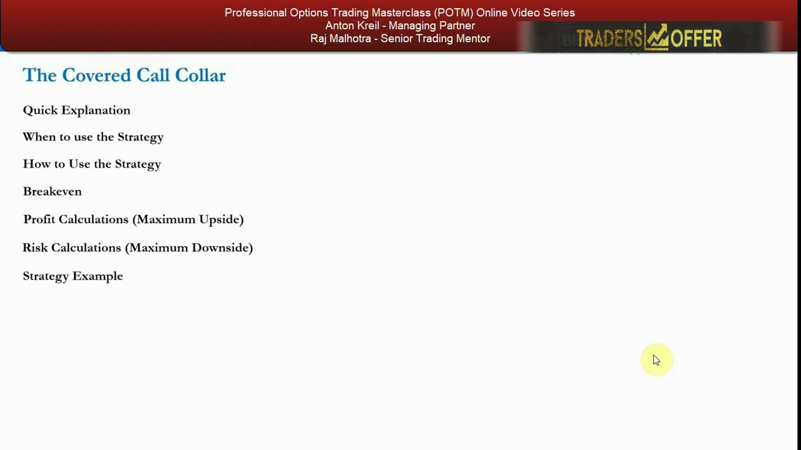
Quick explanation
- Applied when you already hold a long stock position and do not expect the price to move much.
- Profits from a stable stock price in the same way as the covered call.
- Adds protection against a fall because it involves buying puts as well as writing calls.
Same applications, benefits and drawbacks as the covered call, except you also get downside protection on your long stock if the stock actually goes down.
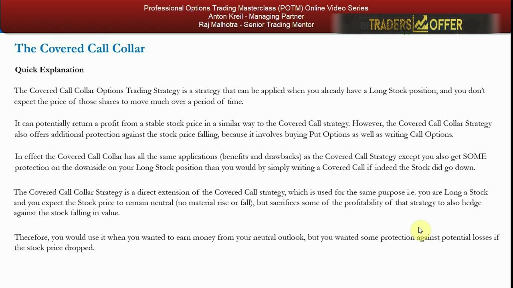
Same neutral bet, with a floor
- You are long stock and expect the price to remain neutral, with no material rise or fall.
- It sacrifices some covered-call profitability to hedge against the stock falling by a decent amount.
- Especially useful for long stock held in a pension, where you want the downside covered.
The collar gives up a little of the covered call's upside in exchange for a meaningful downside hedge. For a long stock position in a pension it ensures the maximum loss is capped for the entire time to expiration, and you still receive a net credit.
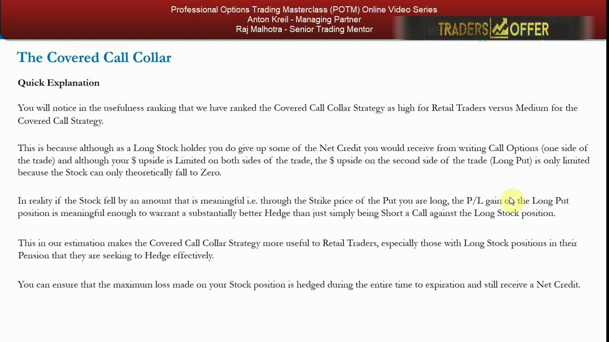
The formalized attributes
- Non-Directional, Neutral, 2 transactions, Net Credit.
- Maximum Risk = Limited; Maximum Gain = Limited (the long put is only limited because the stock can only fall to zero).
- Usefulness = HIGH for the retail trader, versus MEDIUM for the covered call.
It is a fairly simple two-leg strategy with an upfront credit received. Both max risk and max gain are limited; the put's value is bounded only because a stock can fall no further than zero.
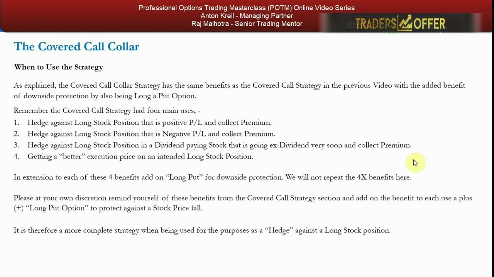
Why usefulness is HIGH, not MEDIUM
- As a long stock holder you give up some of the net credit you would get from just writing the call.
- But if the stock falls through the put strike, the P&L gain on the long put is meaningful enough to be a substantially better hedge.
- Not receiving a net credit defeats the purpose and erases the collar's major advantage over the plain covered call.
The marginal benefit is being paid a credit AND owning a put that gives real downside protection. Once you erase that credit by paying a debit, that major advantage over the covered call disappears; getting paid and getting a superior hedge is the whole motivation.
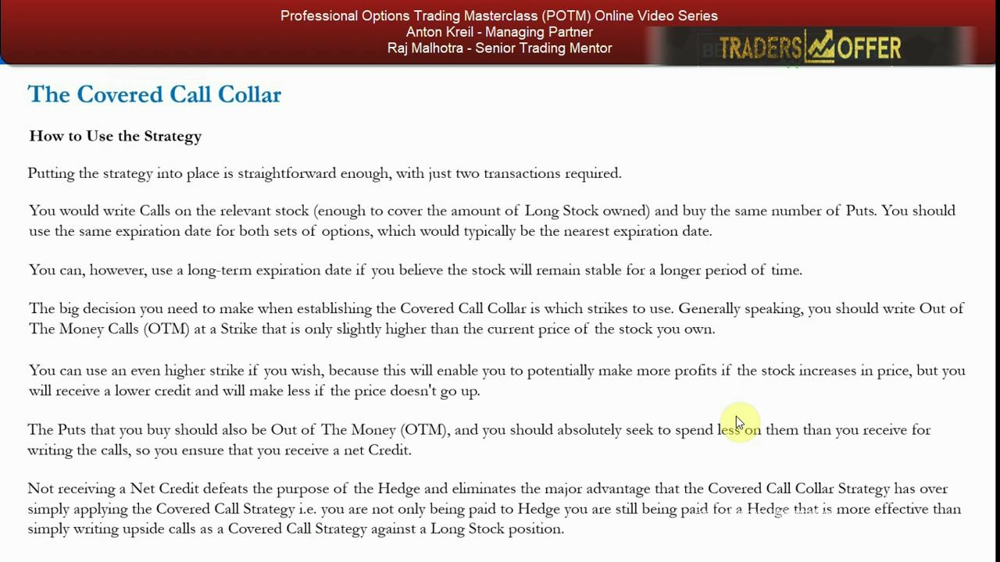
The four uses, plus a put
- Mirrors the covered call's four uses: hedge a long position with positive P&L and collect premium; hedge a long position with negative P&L and collect premium; hedge a dividend-paying stock going ex-dividend soon and collect premium; and get a better execution price on an intended long position.
- To each of the four, add on a long OTM put for downside protection.
- A more complete hedge than the simple covered call.
The four uses are identical to the covered call; the collar simply bolts a long OTM put onto each one so the downside of the long stock is protected as well.
How to put it on
- Two transactions: write enough calls to cover the long stock owned, and buy the same number of puts.
- Use the same expiration for both, typically the nearest expiry (or longer if you expect stability for longer).
- Write OTM calls at a strike only slightly higher than the current price; buy OTM puts, spending less on them than you receive for the calls so the trade is a net credit.
- Do not write strikes so high that you take in too little premium to cover the puts and end up paying a debit.
The biggest decision is which strikes to use. You write the call because you think the stock will neither rise nor fall, and you spend part of that credit on a put to guard against an unforeseen drop, ensuring a net credit remains.
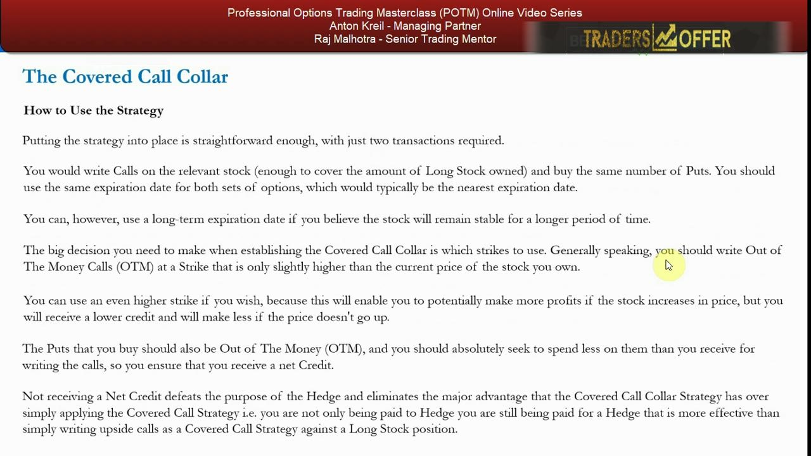
The JNJ setup
- You bought JNJ at $140; it is now $133.15, down $6.85 on the trade.
- You now want to own 300 shares, buying an extra 200 at $133, for an average price of $135.34 across the 300.
- Analyzing on Feb 19th, looking at the 2nd of March expiry, dividend of $0.84 coming Feb 26th.
The example scales the video-9 position up to 300 shares at a $135.34 average, then establishes a collar to protect it and bank premium ahead of the dividend.
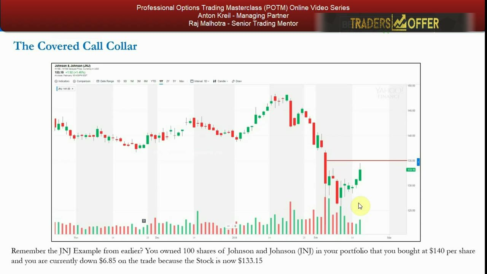
Reading the options chain
- Calls sit on the left of the chain, puts on the right.
- Sell 3x $134 strike 2nd-of-March calls at $1.12 (you get lifted on your offer).
- Buy 3x $129 strike 2nd-of-March puts at $0.73 (you lift the market maker's offer).
Both legs use the same 2nd-of-March expiry, sized 3 contracts to cover the 300 shares. The call is sold slightly OTM above the price and the put is bought OTM below it.
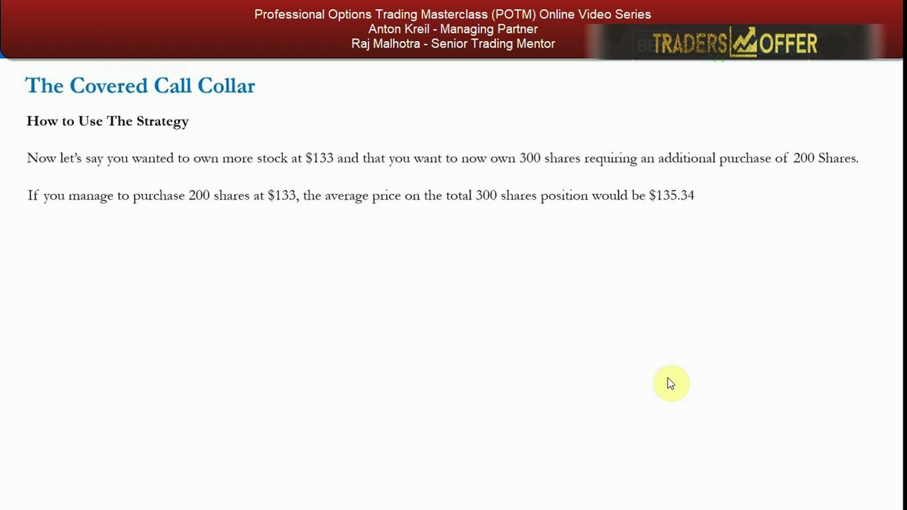
The net credit and breakeven
- Net credit = $1.12 - $0.73 = $0.39 per contract; with the 100-share multiplier that is $0.39 x 300 = $117.
- Breakeven = Starting Point $133 - $0.39 credit = $132.61.
- You lift the market maker's offer on the put rather than bidding for it.
Because the call premium exceeds the put cost, the collar takes in a $0.39 net credit ($117), and the credit pulls the breakeven below the starting point to $132.61.
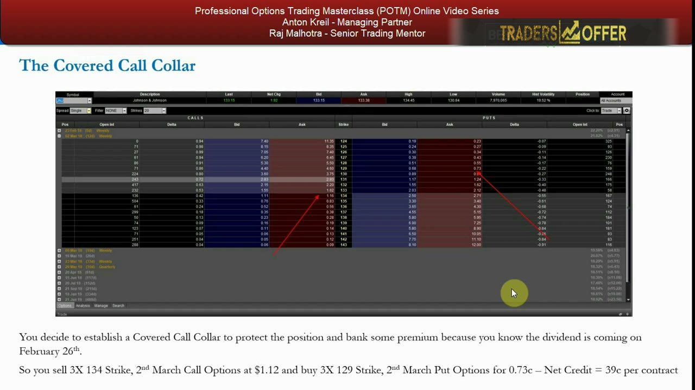
Max profit scenario
- If JNJ closes at $134 ex-dividend on March 2nd, both the call and the put expire worthless and P&L is maximized.
- Stock: ($134 - $133) x 300 = $368; dividend: $0.84 x 300 = $184; options credit: $117; total = $669.
- Execution improves by $0.84 + $0.39 = $1.23, cutting the $135.34 average to a new theoretical execution of $134.11 — turning a losing position into a winner.
At the $134 call strike the collar makes its maximum, combining stock gain, the collected dividend and the options credit for $669, and the added $1.23 of value lowers the effective cost basis to $134.11.
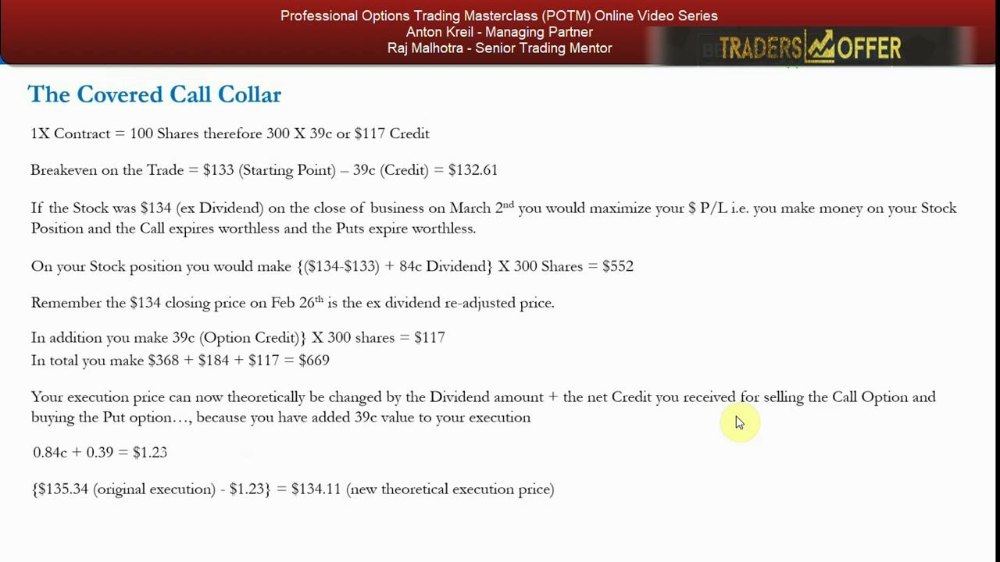
The downside test: an FDA failure
- A phase-three cardiovascular drug worth $7/share fails at the FDA; JNJ gaps $7 lower to $127 in the pre-market.
- Plain covered call: 100 sh from $140, only the $0.80 credit as cushion; down $12.20/share = -8.71%, and it keeps growing if the stock falls further.
- Collar: the $129 puts are in the money by $2; loss is floored at the put strike, so max loss is $6.34 off the $135.34 average = -4.68%.
- Below $129 every 1c further fall in the stock is offset 1c by the put, so losses go no further.
This is the whole point of the collar. On a real shock the plain covered call keeps bleeding past -8.71%, but the collar's put pins the maximum loss at the $129 strike (-4.68%) no matter how far the stock falls.
Breakeven and profit formulas
- Breakeven = Starting Point + Net Premium; if it is a credit the premium is negative, so you SUBTRACT it (a lower breakeven is preferable).
- Split into Leg A (write the call) and Leg B (buy the put).
- Max profit is made when the stock equals the Leg A call strike; profit is also made when the stock is >= Starting Point but < the call strike.
- Profit per share = (underlying price - Starting Point) + (Leg A call price - Leg B put price), which can be a debit or a credit.
The credit lowers the breakeven below the reference price. The profit calculation adds two legs together: the stock's move plus the net options premium, maximized once the stock reaches the written call strike.
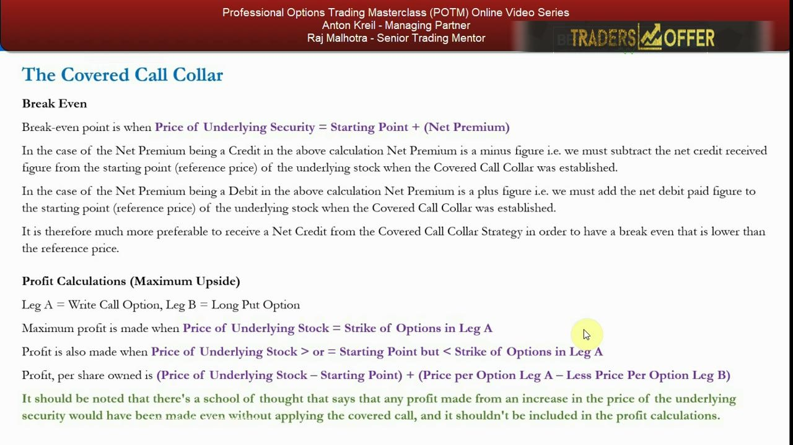
Max loss and the opportunity-cost caveat
- Maximum loss occurs when the underlying equals the Leg B put strike (e.g. $129); both calls and puts expire worthless and you keep the credit.
- Max loss per share = (Starting Point - Leg B put strike) - (Leg A call price - Leg B put price).
- Protection is not full — you choose an OTM put strike, which sets the level where your maximum loss is pinned.
- Opportunity cost: if the stock rallies above the Leg A call strike the calls can be assigned and you may be forced to sell at that strike, so it is a profit but less than just holding the stock; not ideal if a big up-move is expected (you can always close the short call).
The put strike sets a hard floor on the loss, but a slightly-OTM put means the floor sits a little below your cost. The trade-off on the upside is assignment risk: a big rally through the call strike caps your gain, so the collar is not for stocks you expect to jump.
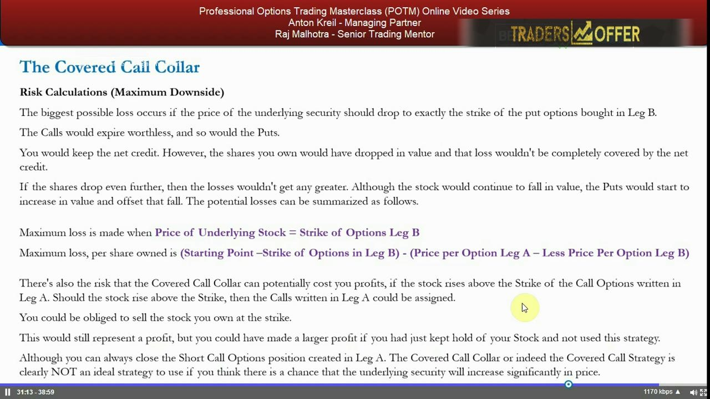
Company X reference example
- Stock at $50; sell the $52 call at $1.00 and buy the $47 put at $0.50.
- Net credit = $1.00 - $0.50 = $0.50.
- Maximum profit = $250, made at the $52 call strike.
The generic template: an OTM call written above the price and a cheaper OTM put bought below it produces a $0.50 net credit and a $250 max profit at the call strike.
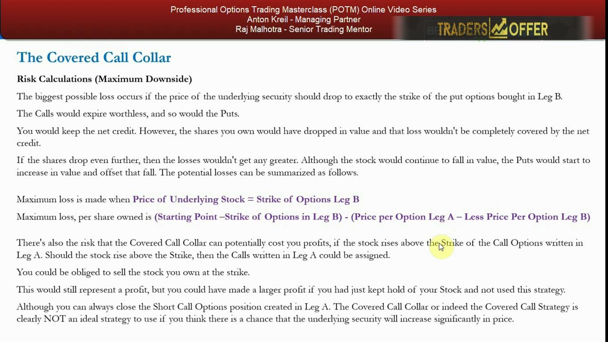
Where the max profit and loss sit
- Maximum gain is reached when the stock rises to at or slightly below the written call strike, then you hope for a rally once calls and puts have expired worthless.
- Maximum loss is barriered at the bought put strike for the whole life of the trade.
- Net conclusion: HIGH usefulness versus the covered call's MEDIUM, because you still receive a credit and gain real downside protection.
The strategy pays best on a neutral-to-slightly-up move into the call strike, while the bought put caps the downside throughout, which is exactly why it ranks above the plain covered call for the retail mandate. Next video: index hedging and portfolio hedges.
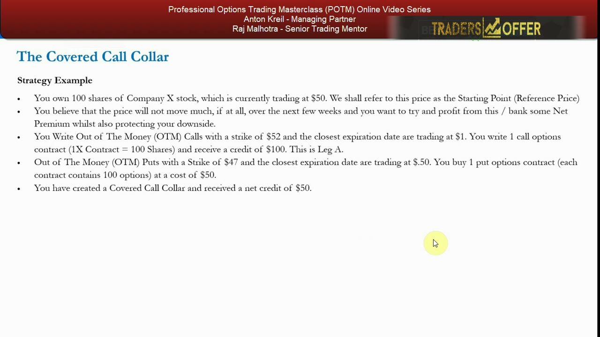
Glossary
- Covered call collarLong stock plus a written OTM call (Leg A) and a bought OTM put (Leg B) at the same expiry, structured for a net credit; a neutral, non-directional strategy that caps both gain and loss.
- Leg AThe written (short) OTM call option; generates the premium credit and caps the upside at its strike.
- Leg BThe bought (long) OTM put option; costs premium but sets a hard floor on the downside at its strike.
- Net creditThe premium collected on the call minus the premium paid for the put; the collar must be structured so this is positive, otherwise the hedge's main advantage over the covered call is lost.
- BreakevenStarting Point + Net Premium; because a collar is a credit, the premium is subtracted, giving a breakeven below the starting point (e.g. $132.61).
- Starting pointThe reference/execution price used to calculate breakeven, profit and loss (e.g. $133 in the JNJ example).
- Maximum profitMade when the stock reaches the written call strike: (call-strike - Starting Point) + (call price - put price) per share.
- Maximum lossMade when the stock reaches the bought put strike: (Starting Point - put strike) - (call price - put price) per share; below the strike every 1c fall is offset 1c by the put.
- Opportunity costThe risk that a rally above the written call strike gets your stock assigned, so you make less than if you had simply held the stock; you can always close the short call to avoid it.
- Usefulness rankingAnton's retail-mandate ranking; the covered call collar is HIGH (credit plus a genuine downside floor), the plain covered call is MEDIUM.